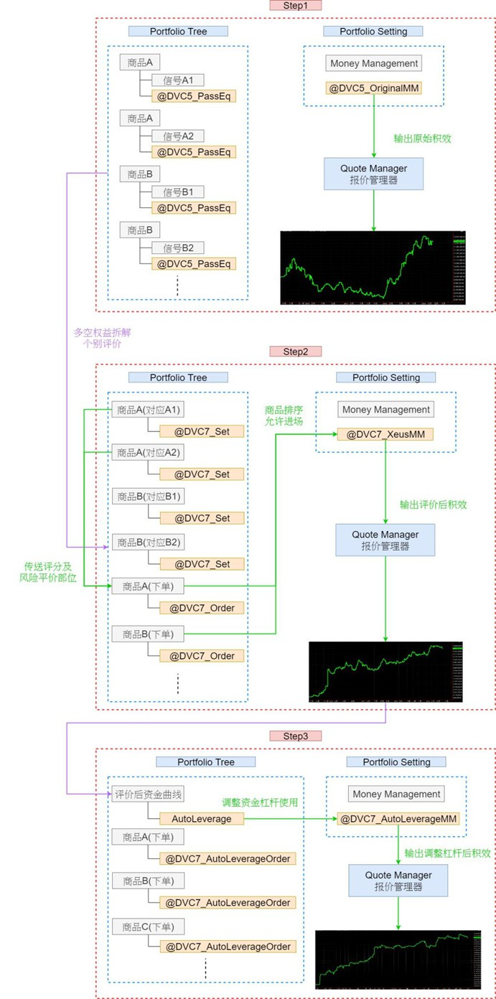
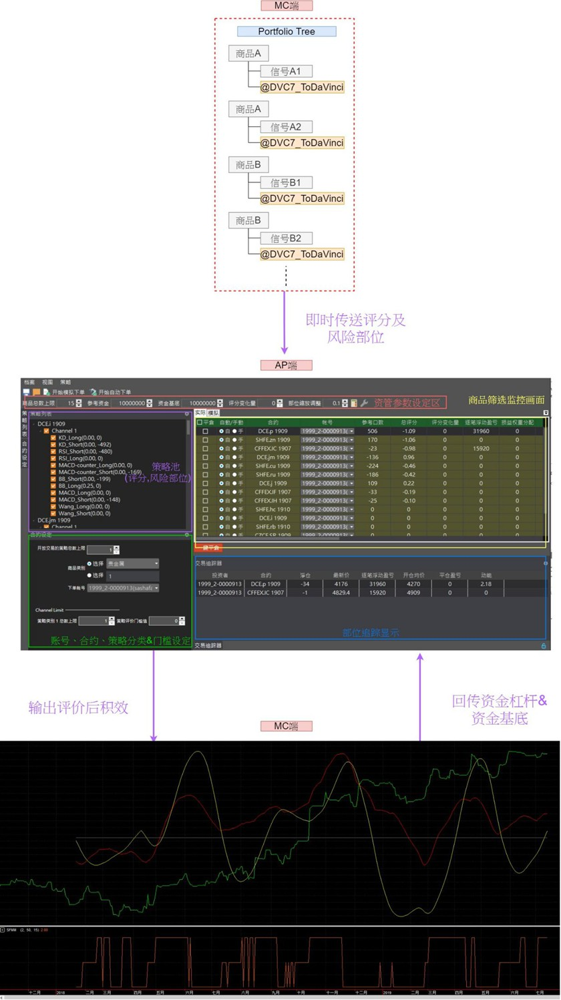

Introduction
壹、快速架构导览
一、MC回测模版
二、MC 与 评价大师 实盘模板
贰、动能评价投资法介绍
一、动能评价函数
二、考虑风险评分散下的部位规模
三、策略商品持仓类别限制
四、自动调整杠杆与可用资金缩放
叁、信号参数定义
一、MC回测模版
二、MC 与 评价大师 实盘模板
肆、完整操作流程
一、MC回测模版
二、MC 与 评价大师 实盘模板
三、其他操作细节
伍、常见问题Q&A
Published with GitBook
壹、快速架构导览
壹、快速架构导览
一、MC回测模版

二、MC 与 评价大师 实盘模板

results matching "
"
No results matching "
"